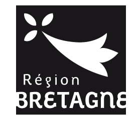
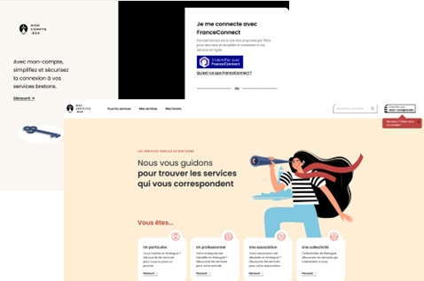
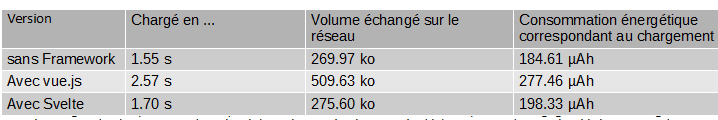
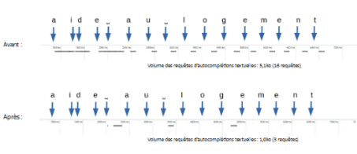

Contexte
Un portail serviciel refondu avec un niveau d'écoconception maximal
Contexte
La Région Bretagne a lancé un projet de refonte de son portail serviciel afin de proposer une nouvelle version de ses services numériques.
Parmi les exigences fortes appliquées à cette nouvelle version figurait l'atteinte d'un niveau d'écoconception maximal.
L'objectif était d'inscrire la sobriété numérique dans les pratiques de conception, de développement et de maintenance du portail, avec un suivi régulier des résultats.

Résultats
Écoconception pilotée par la mesure, du build à la maintenance
Résultats
- Pilotage de l'écoconception par les résultats tout au long du projet, en phase de build puis en phase de maintenance, grâce aux mesures Greenspector Studio.
- Mise en place d'une recherche avec saisie semi-automatique optimisée, réduisant le volume de données d'un facteur 5.
- Publication d'une déclaration d'écoconception présentant les résultats obtenus.
Clés du succès
Ce qui a fait la différence
Former les acteurs du projet à l'écoconception
Les équipes projet ont été formées en amont afin de partager une culture commune de l'écoconception et de ses enjeux.
Définir des exigences de sobriété dès le départ
Des exigences de sobriété ont été définies en amont du projet pour guider les choix fonctionnels, techniques et éditoriaux.
Adapter les bonnes pratiques au contexte du portail
Les bonnes pratiques d'écoconception ont été adaptées au contexte technique et fonctionnel du projet afin de rester concrètes et applicables par les équipes.
Orienter l'expérience utilisateur vers la sobriété
Une revue de design a permis de construire une expérience utilisateur cohérente avec les objectifs de sobriété numérique.
Mesurer à chaque sprint
Les mesures Greenspector Studio ont été réalisées à chaque sprint pendant la phase de build, avec des recommandations de progrès fondées sur les résultats observés.
Témoignage
La parole à Nicolas Desmons
« Nos développeurs ont été sensibilisés dès le démarrage du projet et ont, petit à petit, modifié leur manière de travailler pour adopter des réflexes d'écoconception. Il s'agit d'une modification profonde des pratiques. Les indicateurs d'écoscore de Greenspector nous ont servi d'étalon tout au long de ce process. »
Visuels
Le projet en images


À vous de jouer
Vous souhaitez piloter l'écoconception de vos services numériques ?
À vous de jouer